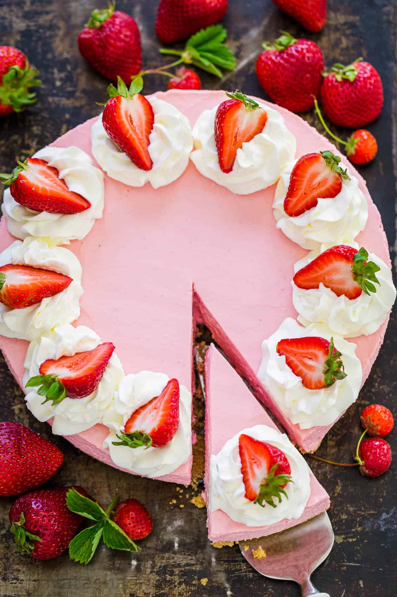

No Bake Strawberry Cheesecake

How to make a no bake strawberry cheesecake
This is the perfect recipe to make for the summer! It looks beautiful and tastes amazing!
Ingredients
Ingredients for the Graham Cracker Crust
- 1 3/4 cups graham cracker crumbs, from 12 whole crackers
- 1 Tbsp granulated sugar
- 8 Tbsp unsalted butter
Ingredients for No Bake Cheesecake
- 1 LB strawberries
- 8oz cream cheese, room temperature
- 2/3 cup granulated sugar
- 12oz mascarpone cheese, chilled
- 2 Tbsp lemon juice
- 14 grams unflavored gelatin, (2 packets)
Topping/Decor
- 1 cup heavy cream
- 2 Tbsp granulated sugar
- 1/2 Tsp vanilla extract
- 6 strawberries, halved
Steps
- Oil the bottom and sides of a 9" springform and line the sides with 1-2 strips of parchment paper
- Place graham crackers In the bowl of a food processor, pulse into fine crumbs. Transfer crumbs to bowl, add 1 Tbsp sugar and 8 Tbsp melted butter. Stir to evenly moisten crumbs then press into the bottom of a 9" springform pan going 1/2" up the sides. Freeze 15 minutes or refrigerate 30 minutes for crumbs to set.
- Wash & pat dry strawberries then hull and quarter. Puree in blender or food processor until smooth then strain through a sieve and set aside. Should have 1 1/2 cups puree.
- In a large mixing bowl, combine 8 oz cream cheese and 2/3 cup granulated sugar. Beat on medium/high speed 2 minutes until fluffy and smooth, scraping down the bowl as needed.
- Add 1 cups heavy whipping cream and beat until fluffy (3-5 minutes on high speed). Reduce speed to medium/low and beat in 12 oz mascarpone until well combined and smooth.
- Add 1 1/2 cups strawberry puree and 2 Tbsp lemon juice and blend until smooth.
- In a shallow heat-safe bowl, add 1/2 cup cold water and sprinkle the gelatin over the top. Set aside 5 minutes to bloom and absorb the water. Microwave gelatin for 30-35 seconds, stirring every 10 seconds. Heat and stir until fully dissolved and liquid looks clear. Scrape any gelatin pieces against the bowl to help them dissolve. With mixer on med-low speed, gradually add gelatin and beat until well incorporated.
- Transfer cheesecake filling over the chilled crust, cover with plastic wrap and refrigerate at least 4 hours or overnight until completely chilled.